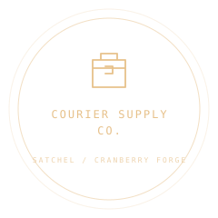

INDEPENDENT TOOLInventory & crafting
Satchel
Every little thing, in its place.
A thoughtful home for the things players find, carry, trade, and make.
MIT LICENSEv0.1.0MODULAR BY DESIGN

THE COURIER'S CAMP
Click a treasure to put it in your pack.
TAKE THE SYSTEM WITH YOU
A backpack for your next world.
Download package ↓Complete API & tutorial ↗
inventory.js

A COMPLETE LITTLE ADVENTURE
Take Mothlight home.
Meet Mira, gather the missing pieces and build a light for the skyships. A playable template using Satchel and Chatter, with original Three.js scenery and a complete save loop.
Play the adventure ↗Download complete template ↓FROM SHOWCASE TO YOUR PROJECT
Take the good parts with you.
Try stacking, arranging, and crafting. Bring the inventory rules into your game with your own interface.
Download the archive, then install locally.
npm install ./cranberry-forge-satchel-0.1.0.tgz